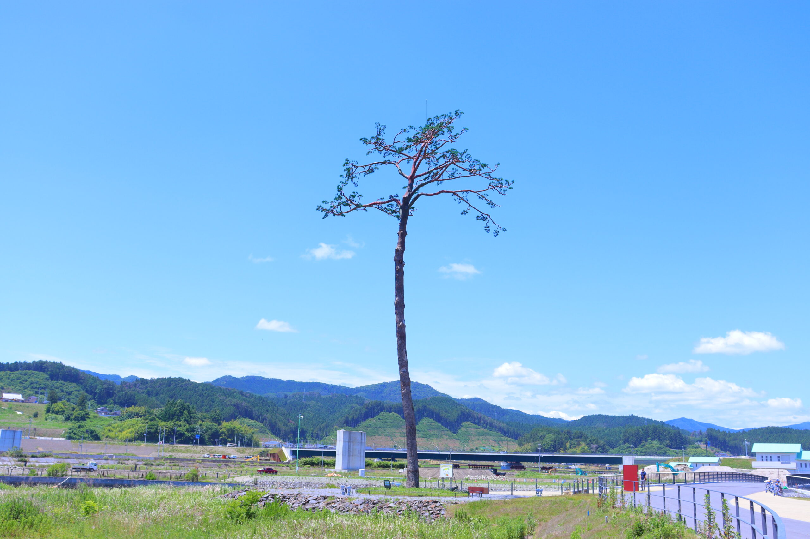

高田松原津波復興祈念公園に整備される国営追悼・祈念施設は、犠牲者への追悼と鎮魂、震災の教訓の伝承、 復興への強い意志の発信の場として、広田湾から津波がさかのぼった気仙川へと至る「祈りの軸」を中心に、 7万本の松のうち１本だけ残った「奇跡の一本松」、重点道の駅として復旧される道の駅「高田松原」、 震災遺構「タピック45」、海岸防潮堤等と一体となった空間の｢追悼の広場｣等を整備しています。
高田松原震災復興記念公園
（奇跡の一本松）
奇跡の一本松
平成23年3月11日、陸前高田市を地震と大津波が襲いました。 死者、行方不明者は2,000人近くにのぼり、市街地や海沿いの集落は壊滅しました。 過去の度重なる津波から高田のまちを守ってきた、約7万本と言われる高田松原も ほとんどが流されてしまいましたが、その中で唯一耐え残ったのが「奇跡の一本松」です。

津波に耐えて奇跡的に残った一本松でしたが、海水により深刻なダメージを受け、 平成24年5月に枯死が確認されました。しかし、震災直後から、 市民のみならず全世界の人々に復興のシンボルとして親しまれてきた一本松を、 今後も後世に受け継いでいくために、陸前高田市ではモニュメントとして保存整備することといたしました。それが「奇跡の一本松保存プロジェクト」です。